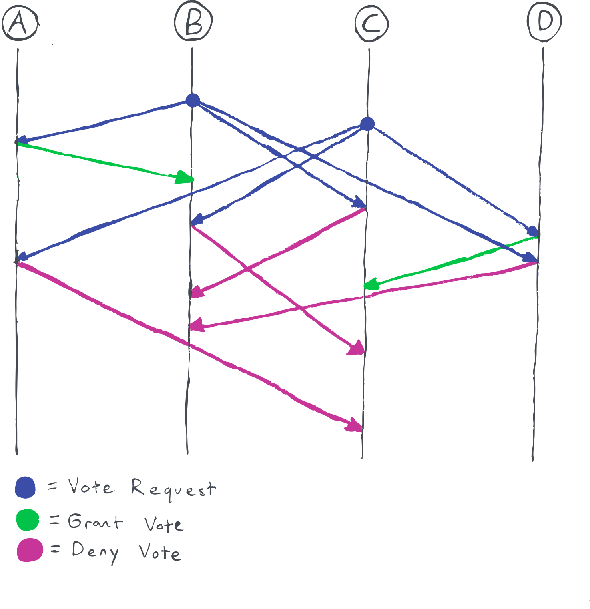

Raft is a distributed consensus protocol. It is designed to allow a network of computers ("nodes") to agree on a log of events, even in the face of network partitions, packet loss, and nodes going down. Raft is also designed with the goal of being easier to understand than other distributed consensus protocols, such as Paxos - because of this, the Raft paper is quite readable, and I highly recommend it if you're interested in learning more.
This blog post will explain the basics of how Raft works, as well as some problems that can arise in real-world implementations.
Raft basics
Raft is designed to allow a small number of nodes to agree on a log of events. There are a few problems that it doesn't attempt to solve:
- Malicious nodes
- Larger datasets than fit on one machine
The main reason that you would want to run a Raft cluster is for redundancy - so that if one node goes down, the cluster will still operate normally.
Raft operates with a "strong leader" model - this means that all updates come from a "leader" node. This simplifies the algorithm, because as much complexity as possible is managed by the leader.
There are two main components of raft - leader election, and log replication. The leader election phase determines which node is the leader. After a leader is elected, the log replication phase begins, where the leader sends new log entries to the followers.
Leader election
In Raft, time is divided into different "terms". Each term begins with an election, and the leader that is elected remains leader for the duration of the term.
At any given time, a node can be in one of three states: Follower, Candidate, or Leader. All nodes start in the follower state. When a node is a leader, it sends out a heartbeat message periodically to make sure all of the nodes know that it is still a leader. Follower nodes have a randomized "election timeout" (the paper suggests using rand(150ms, 300ms)). If the election timeout elapses without the follower receiving a heartbeat from a leader, the follower will convert into a candidate. When it converts into a candidate, it will vote for itself and send a "request vote" message to all other nodes in the network.
Each node can vote once per term, and votes as follows:
- If the voter has seen a message with a higher term than the vote request is for, deny vote
- If the voter has already voted for this term, deny vote
- Otherwise, grant vote
When a candidate has received votes from a majority of nodes in the network, it becomes a leader.
These rules ensure that there is at most one leader per term.
In the ideal case, the node with the lowest timeout value will convert into a candidate, and all the other nodes in the network will receive the vote request before their timeout runs out. If this is the case, everything works as expected.
However, there is a failure mode that can occur: If the request vote message takes a long time to be delivered, multiple nodes could convert into candidates. If there is an even number of nodes in the network, the vote can be split between them. If the vote is split, then one of the nodes will time out and start a new election. For this reason, networks are usually designed to have an odd number of nodes (three and five are both common sizes). However, a split vote can still occur if one of the nodes goes down.

Log replication
Once a leader has been elected, it's time to start the log replication process. In order to replicate an entry to all nodes, the leader sends out an "append entries" message containing the log entry(s) to be appended. When a node receives an append entries message, it adds the entries to its log, and responds to the leader saying that it has done so. However, the node doesn't "commit" the entry to the log. This is to ensure that once we commit an entry, there is no chance that it will be lost due to a machine going down/etc. Once the leader receives a response from a majority of the nodes stating that they have the log, it sends out a second message informing them that they should commit the log.
It's important that the leader always have the most up-to-date information, so we add the requirement that for a node to vote for another node during the leader election, the candidate's log must be at least as up-to-date as the voter's log. This ensures that once an entry is committed to a majority of nodes, a less up-to-date node cannot become leader, since it will not be able to get the majority of votes.
Client interaction
In Raft, interaction with clients is very simple - Clients only interact with the leader, and if a client tries to talk to a follower, the follower will inform the client which node is currently the leader.
One complication around client interaction arises from wanting to make sure that client requests are only processed once: If a leader goes down before it tells the client that the message was written to the log, but after it was received by the other nodes in the cluster, the client will try to resend to the new leader. To prevent this, each client command is given a unique serial number, which is kept in the log along with the real data. This way, if a leader gets a command with a serial number that has already been processed, the leader can simply respond affirming the success of the command without taking any action.
The Raft paper seems to suggest only keeping the most recent command for each client, presumably to avoid the O(n) lookup for the serial number. However, this does have the downside of disallowing concurrent requests from a client, which could be undesirable in some situations (When using Raft with commutative log entries, specifically).
Raft problems
This section will talk about some potential problems when implementing and deploying Raft in the real world. Note that I have no experience actually deploying Raft, so the things that I say here should be taken with a grain of salt. If you have experience deploying Raft in production, I'd love to hear about the sorts of issues that you have, and would be happy to link back to any relevant blog posts :)
Latency
One problem that Raft can have is the behaviour when a single node has very high latency. One can imagine a scenario where one of the nodes has a latency higher than it's election timeout, causing it to continuously start elections. This would stop the network from functioning, since the real leader would see the higher term from the high-latency node and step down. This can continue indefinitely, since the high latency node may not be able to see the votes that it does get, causing it to kick off another election.
While this is briefly mentioned in the paper (in the form of the requirement \(broadcastTime \ll electionTimeout \ll MTBF\)), it's really important to think about this when selecting timeout values. The latency that will cause failures is also probably lower than you'd expect, for a couple reasons. One is that high latency on any node can cause this issue, so you need to look at the expected latency of all nodes in the network. The second reason is that most response RPCs are disk bound as well as network bound (see next point), so you need to be thinking about both tail network latency and tail disk latency when selecting timeout values.
Sync to disk
In order to guarantee correctness, a node must sync some changes to disk before responding to an RPC (specifically, it must sync currentTerm, votedFor, and log). This causes two problems:
- Performance is significantly decreased from what one would expect, since writes are both network and disk bound.
- It often isn't actually possible to tell if a change has been synced to disk (even when calling
fsync), due to on disk caching. - In the real world, disk failures happen, and it's important for a distributed system to be able to deal with them.
The reason that a sync to disk is required is to avoid breaking any of the guarantees that we made earlier. Specifically:
- We need to sync
currentTermandvotedForto avoid voting multiple times in the same election after a reboot. - We need to sync
logso that we can guarantee that a candidate that does not have the most up to date log cannot get a majority.
I don't think that there's a good way around this - you just need to think about it when designing a system using Raft.
Conclusion
Raft is a really interesting algorithm for providing distributed consensus. If you want to learn more about it, I highly recommend reading the paper, looking at this visualization, or implementing it yourself!
Thanks to Dan Luu, Brennan Holt Chesley, Jinny Cho, Christian Ternus, and David Turner for comments/feedback/discussion.